20 Obras literarias reconocidas desde la literatura antigua hasta la actualidad
Autor: Homero
Género: Épica
Año de publicación: Siglo VIII a.C.
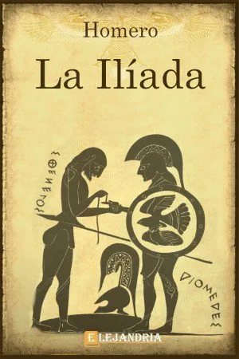
Autor: Homero
Género: Épica
Año de publicación: Siglo VIII a.C.
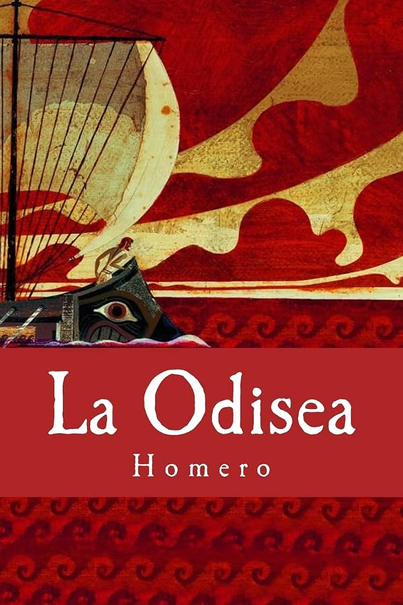
Autor: Dante Alighieri
Género: Épica
Año de publicación: 1320
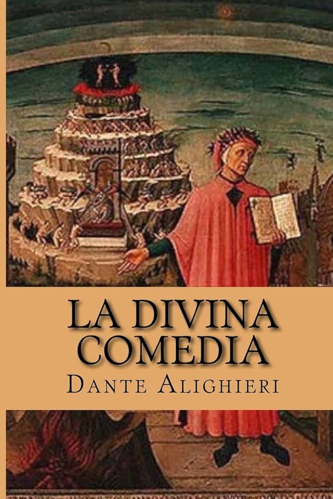
Autor: Giovanni Boccaccio
Género: Narrativa
Año de publicación: 1353
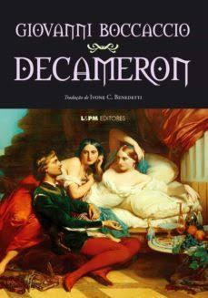
Autor: Miguel de Cervantes
Género: Narrativa
Año de publicación: 1605-1615
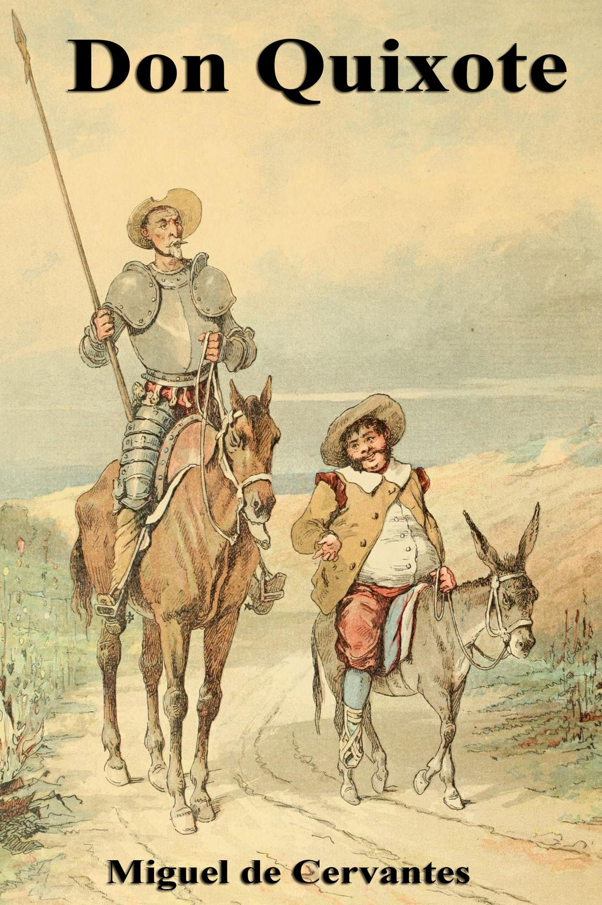
Autor: William Shakespeare
Género: Tragedia
Año de publicación: 1603
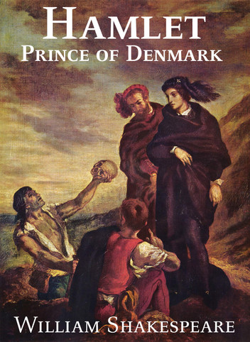
Autor: Jane Austen
Género: Narrativa
Año de publicación: 1813
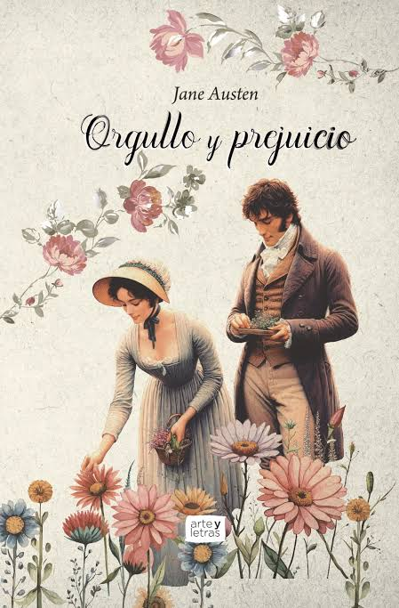
Autor: Mary Shelley
Género: Ciencia ficción
Año de publicación: 1818
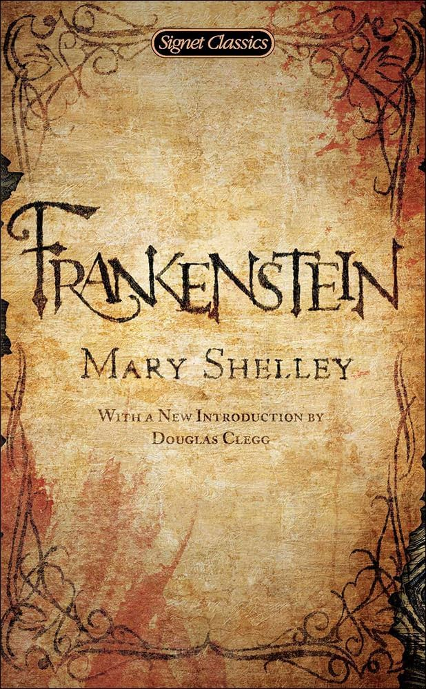
Autor: Victor Hugo
Género: Narrativa
Año de publicación: 1862
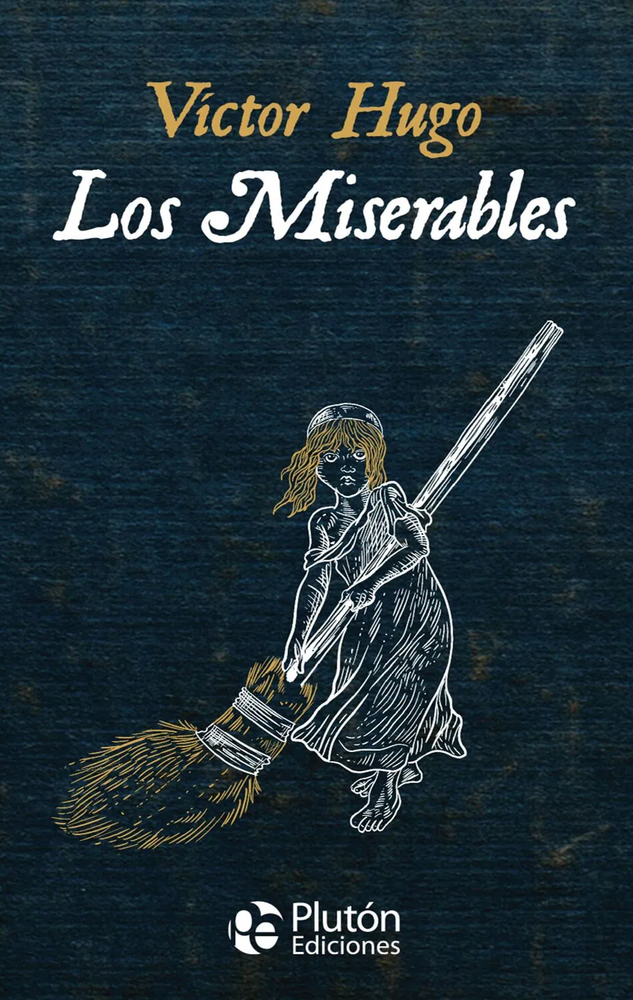
Autor: Lewis Carroll
Género: Narrativa
Año de publicación: 1865
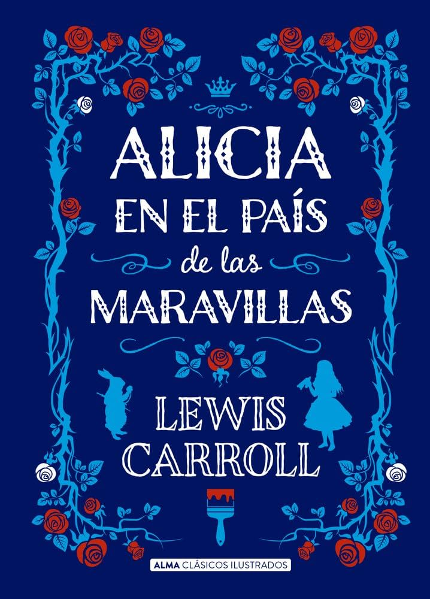
Autor: Fyodor Dostoevsky
Género: Narrativa
Año de publicación: 1866
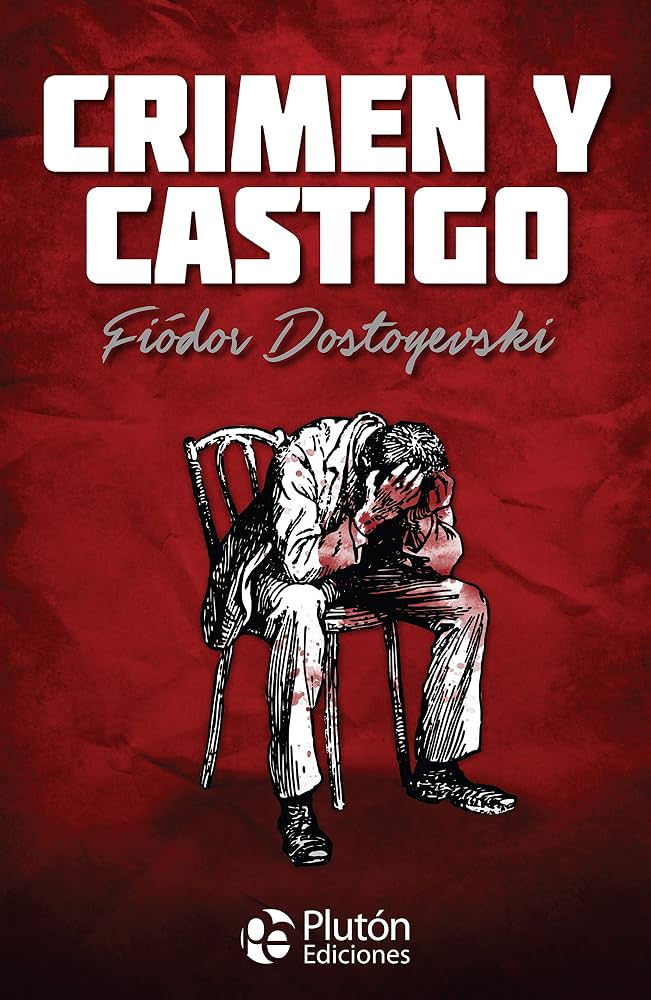
Autor: Bram Stoker
Género: Terror
Año de publicación: 1897
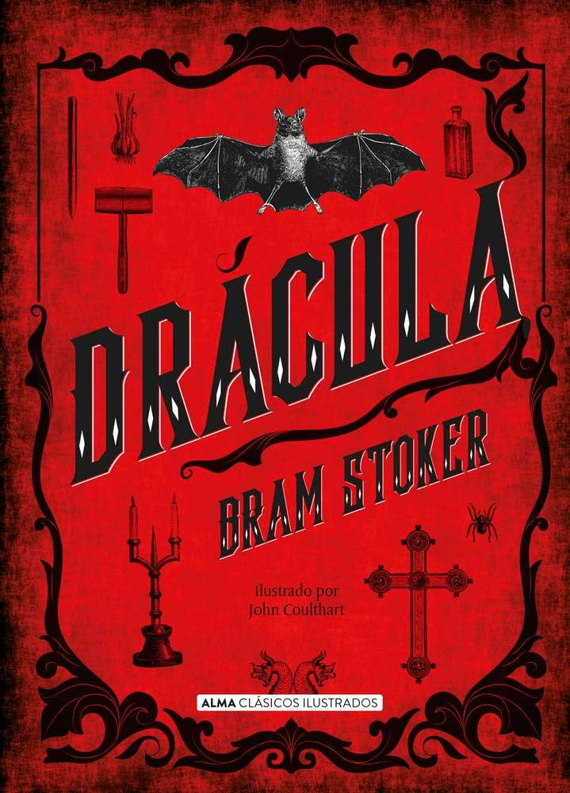
Autor: Franz Kafka
Género: Narrativa
Año de publicación: 1915
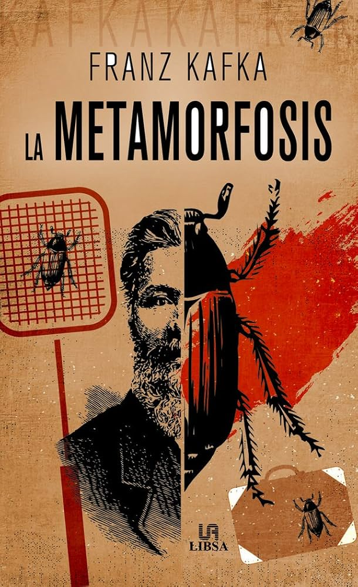
Autor: F. Scott Fitzgerald
Género: Narrativa
Año de publicación: 1925
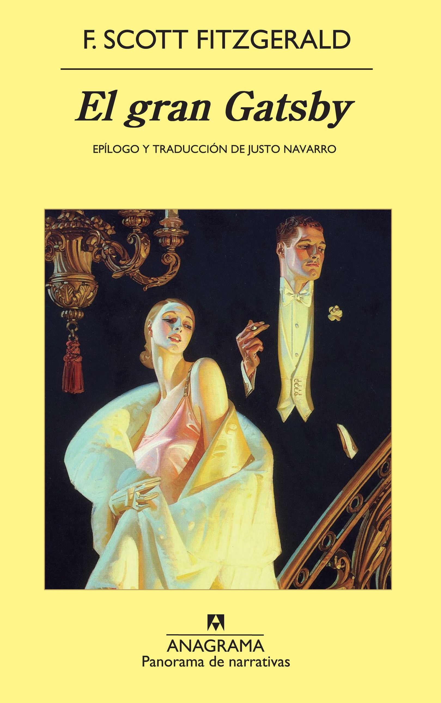
Autor: Antoine de Saint-Exupéry
Género: Narrativa
Año de publicación: 1943
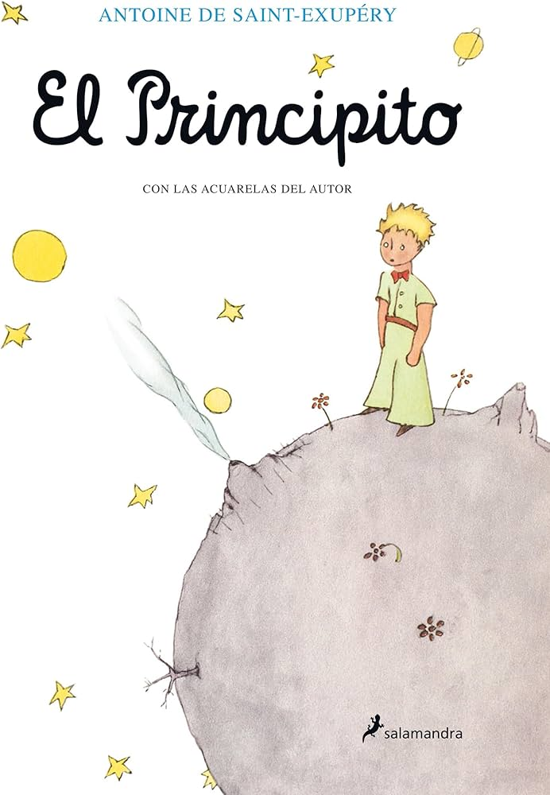
Autor: George Orwell
Género: Ciencia ficción
Año de publicación: 1948
Autor: Ray Bradbury
Género: Ciencia ficción
Año de publicación: 1953
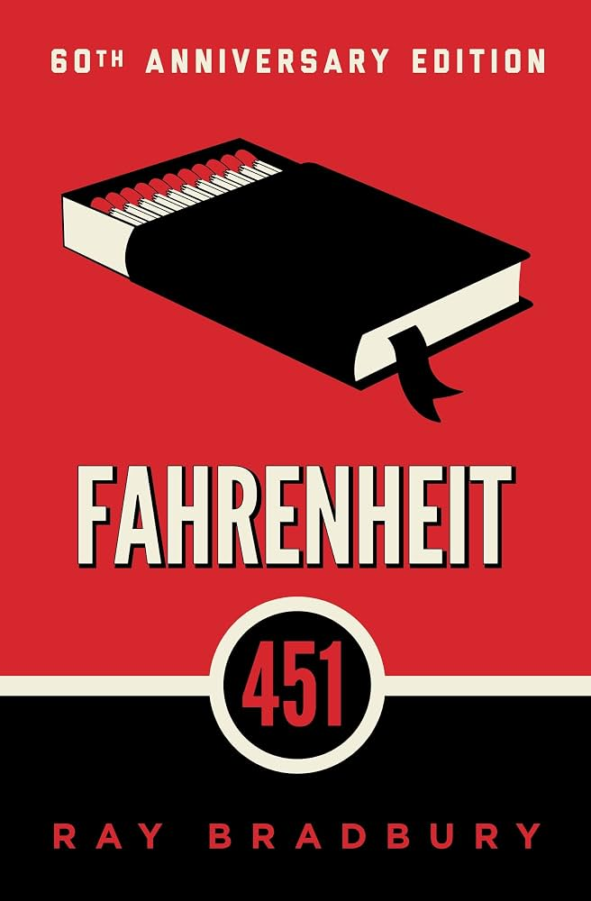
Autor: Gabriel García Márquez
Género: Realismo mágico
Año de publicación: 1967
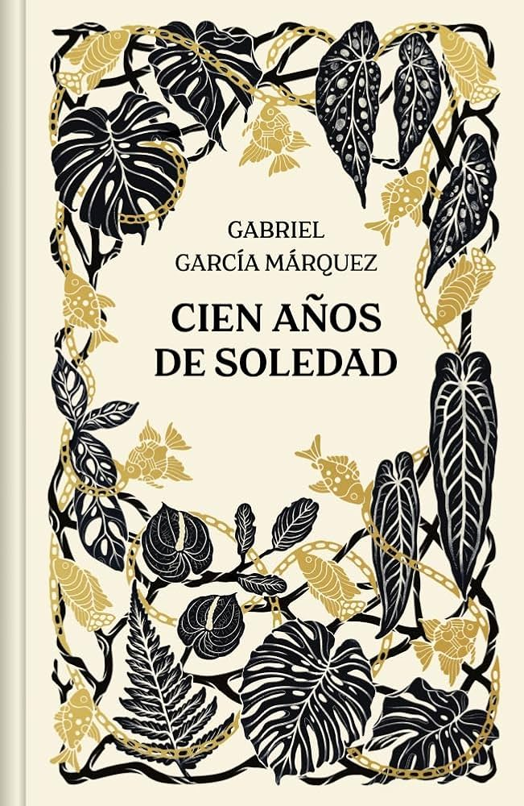
Autor: Umberto Eco
Género: Narrativa
Año de publicación: 1980
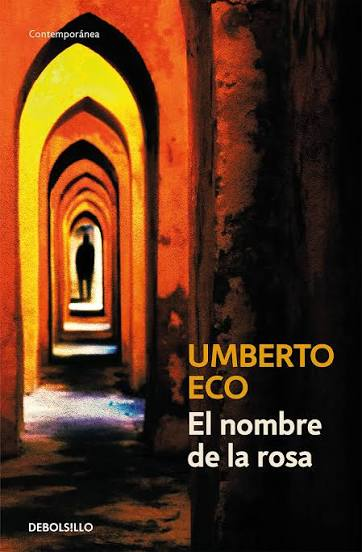
Autor: Carlos Ruiz Zafón
Género: Narrativa
Año de publicación: 2001
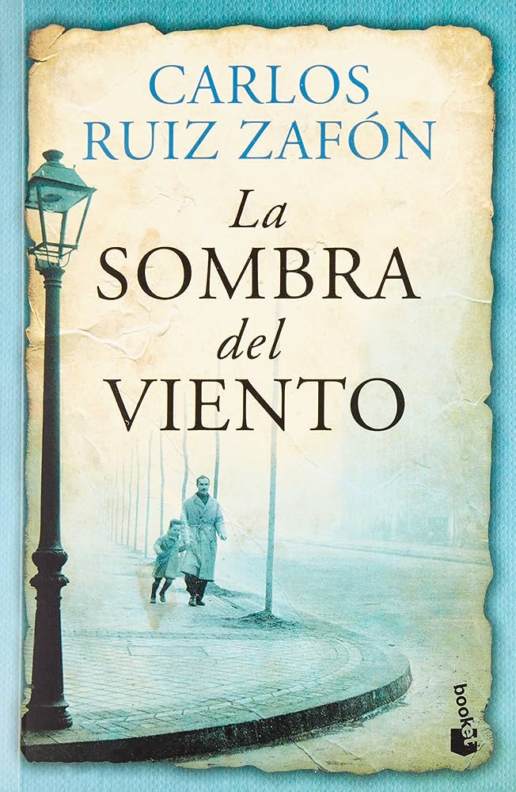